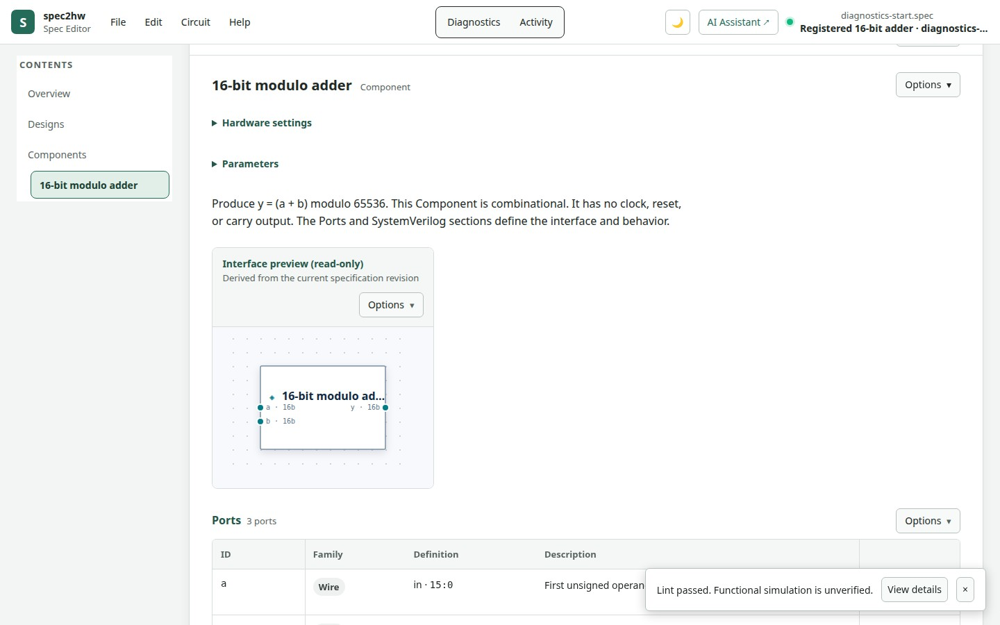
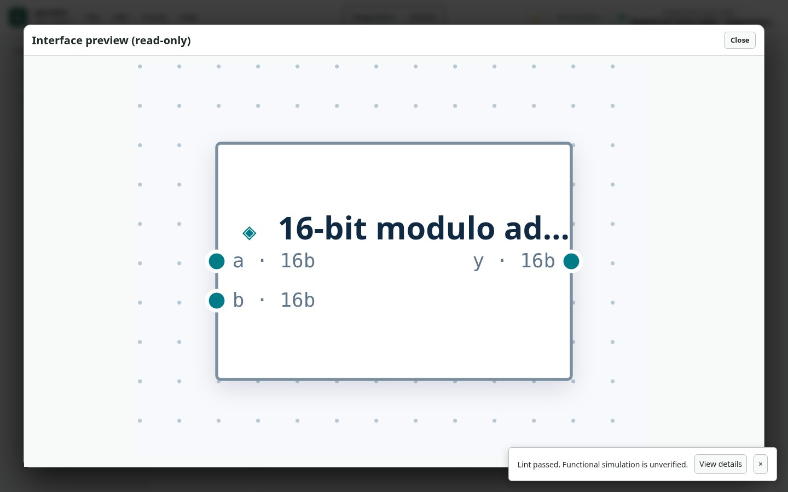

CORE 03 / 09 · GUIDED PRACTICE
Add hardware behavior
Save adder logic and run an explicit lint check.
Before you start
Spec Editor and Verilator 5.x on the service host. Use the saved three-port adder.
Read each action, do it, then compare the expected result before continuing. Use a fresh prepared start to retry. Reading time and automated execution time are not measured learner practice time.
Actions
Find the leaf Component
Open03-start.spec. Locate the 16-bit modulo adder and inspect its three ports.Expected result: The interface is complete but the Component has no saved SystemVerilog body.
Add a behavior Section
Select Options → Add SystemVerilog section… on the adder.Expected result: An editor opens for a module body, not a complete module declaration.
Save the assignment
Paste the body below, then select Add section. Do not include module, endmodule, or port declarations.assign y = a + b;Expected result: The saved SystemVerilog section shows assign y = a + b;.

The saved SystemVerilog section contains a module body. Select the image to view its full size. Run an explicit check
Select the Component’s Options → Verify Component. Do not open the panel yet.Expected result: A short notification reports the result. Verification does not open the panel or insert a report into the document.
Inspect Diagnostics
Select the notification’s View details, or use the Diagnostics toolbar button if it has expired. Find the adder’s verification report.Expected result: With Verilator available and this source unchanged, the result is Lint passed. Unavailable tools are reported instead of a pass.
Inspect the checked source
Expand Technical details for the report. Compare the saved target, revision, tool, and resolved interface.Expected result: The report identifies the source it checked. A successful report does not add an attention count.

Diagnostics identifies the checked target; Technical details contains the saved revision and resolved interface. Select the image to view its full size. Return to the document
Close the side panel or press Escape. Inspect Interface preview (read-only) on the adder; use Options → Preview interface if needed.Expected result: The complete leaf diagram has three terminals. Small diagrams are not enlarged; the document remains visible.

The complete Component interface fits a compact preview without enlargement. Select the image to view its full size. Inspect at full size
Open the preview’s Options menu and select Expand. Inspect the diagram, then close the expanded view.Expected result: The preview shows the interface, not an inferred implementation of the assignment.

Expand provides a larger inspection view without changing saved geometry. Select the image to view its full size. Download the diagram
In the preview’s Options menu, select Download SVG. Save it under your tutorial run directory and open it.Expected result: The downloaded SVG keeps the original diagram dimensions and geometry.
Confirm persistence and limits
Reopen the same Spec. Compare the saved body and run Verify again if the result is missing or stale.Expected result: The source persists. Lint checks consistency; functional simulation is still unverified.


Check your result
The saved SystemVerilog section contains the assignment. The explicit check reports Lint passed for the current saved source. The preview has exactly three terminals.
Try it yourself
Open Edit on the SystemVerilog section, add a source comment, and save. Check whether the verification becomes out of date, then run Verify Component again.
If it fails
If the compiler is missing, the result is Not verified. Ask the environment maintainer to install Verilator. If lint fails, inspect its diagnostic and fix the saved SystemVerilog. A saved body can still contain a compiler error.
Continue
NEXT GUIDECreate a Component with AI AssistantReference: rtl generation · Complete example